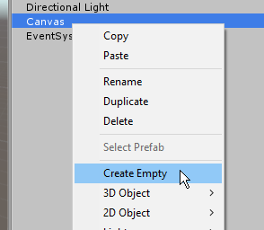
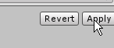

Building a simple Inventory system
Or go back to home
What's included?
A simple inventory UI system that displays what items the player is carrying.
In this version, you can't click on the items. It is only to show what you have.
Other scripts will add or remove items.
(If you have already done my simple NPC tutorial, you can add this to the same scene then make those NPCs interact with the inventory.)
Create the UI
In Unity, in the Heirachy
Create a Canvas
Right-click on Canvas and Create Empty

Rename this gameobject 'InventoryUI'

Right-click on InventoryUI and create UI->Image
Create 3 more images using the same process, until you have 4 images:
You need a picture to represent an empty inventory slot. Draw or find a picture, and drag it into unity's Project view.
Click on the picture in the Project view, and set its Texture Type to Sprite (2d)
Then click Apply

Drag your new 'empty' sprite into the 'Source Image' slot in your Images in your UI:
Switch the editor to 2d mode and select the 2d editing tool
select InventoryUI in the Heirachy View, and resize it to where you want the inventory to be on the screen. Here, I've put it on the left side of the screen.
Add a component to the inventoryUI: A grid layout group. This will make its contents spread out in a grid.
(I used a vertical layout in the screenshot, but I recommend using grid layout instead.

You can set spacing if you like space between the images:
Add the Inventory and Item Types code
Create a new empty GameObject in the Heirachy
name it Inventory
This object is invisible, and holds our inventory system. The system is separate from the UI.
On this new Inventory object, Add Component, C# Script, and name the script Inventory
Add another Component, C# Script, and name this script ItemList
(Now there are two scripts.)
ItemList will define the different kinds of items you can get in this game.
Each item has a name and an image.
Edit the ItemList script, delete all the existing code and paste in this instead.
using UnityEngine;
using System.Collections;
using System.Collections.Generic;
public class ItemList : MonoBehaviour {
public List<string> itemNames = new List<string>();
public List<Sprite> itemImages = new List<Sprite>();
public Sprite GetImage(string itemName)
{
var itemNumber = itemNames.IndexOf(itemName);
if (itemNumber < 0) itemNumber = 0;
return itemImages[itemNumber];
}
}Now in the editor, set up your items. Set the Item Names Size to 2 and the Item Images size to 2.
Once you type in 2 and press enter, empty slots will be created for you to fill.
Make the first item name "empty" and drag the empty sprite into the first image slot. This means when the inventory slot is empty, it will show that image.
Give your second item a name. Mine is called 'mouse'. Make a new sprite for it by drawing a picture, dragging it into the Project view, and setting its Texture Type to Sprite.
Now go to the ItemList. Set the next item name to 'mouse' and set the next item image to the mouse image.
That's enough on Item Types.
The main Inventory Script
Now edit the Inventory Script. Delete the existing code and put in this:
using UnityEngine;
using UnityEngine.UI;
using System;
public class Inventory : MonoBehaviour
{
public ItemList ItemList;
public const int NumberOfSpaces = 4;
public Image[] InventorySlotImage = new Image[NumberOfSpaces];
public string[] InventorySlotItem = new string[NumberOfSpaces];
public void Start()
{
//set every slot to be empty
for (int i = 0; i < InventorySlotItem.Length; i++)
{
InventorySlotItem[i] = "empty";
InventorySlotImage[i].sprite = ItemList.GetImage("empty");
}
}
public bool HasItem(string item)
{
return Array.IndexOf(InventorySlotItem, item) >= 0;
}
public bool HasSpace()
{
return HasItem("empty");
}
public void AddItem(string itemToAdd)
{
//find an empty item slot
for (int i = 0; i < InventorySlotItem.Length; i++)
{
if (InventorySlotItem[i] == "empty")
{
//add the item
InventorySlotItem[i] = itemToAdd;
InventorySlotImage[i].sprite = ItemList.GetImage(itemToAdd);
return;
}
}
}
public void RemoveItem(string itemToRemove)
{
for (int i = 0; i < InventorySlotItem.Length; i++)
{
if (InventorySlotItem[i] == itemToRemove)
{
InventorySlotItem[i] = "empty";
InventorySlotImage[i].sprite = ItemList.GetImage("empty");
return;
}
}
}
}Ok, once you've saved that you need to set it up in the Inspector.
Tell it what images to use for its UI by dragging them into the appropriate slots:
Tell it what Item List to use by dragging the Item List up from below
Now it is all set up. Any script can use the inventory with these 4 commands:
RemoveItem(name)
AddItem(name)
HasItem(name) - tells you if the player has this item
HasSpace() - tells you if the player has an empty space to pick up another item
You can add more types of items in ItemList.
Add a new script to the Inventory GameObject, called TestInventory. This script is just for testing. it adds and removes an item when you press E and F. It checks if you have an item when you press G.
using UnityEngine;
using System.Collections;
public class TestInventory : MonoBehaviour {
public Inventory inventory;
// Update is called once per frame
void Update () {
if (Input.GetKeyDown(KeyCode.E))
{
inventory.AddItem("mouse");
}
if (Input.GetKeyDown(KeyCode.F))
{
inventory.RemoveItem("mouse");
}
if (Input.GetKeyDown(KeyCode.G))
{
print(inventory.HasItem("mouse"));
}
}
}
You will have to drag the Inventory game object into this script before it will work.
That's all
In your own scripts, you can use the inventory commands (AddItem, RemoveItem, HasItem and HasSpace) to manage the inventory.
You can combine this with the NPC tutorial to make NPCs give items, take items and check if you have items. Here's an example of what you might do:
//...at the start of the class
public Inventory inventory;
//...inside our NPC chat code
if (inventory.HasItem("mouse")) {
chatText.text = "I like your pet mouse!";
} else {
chatText.text = "You need to find a pet.";
}